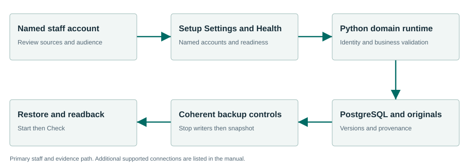

A shared foundation for accountable municipal work.
Core provides the shared contracts, ingestion, identity helpers, task infrastructure and recovery foundation used by Townlight. Staff encounter these capabilities through Setup, Settings and System Health. Business decisions stay with their owning product.
What the workflow delivers
- Complete setup. Choose folders and the full product composition. Create the city profile and the first named administrator. Choose a protected backup location. Defer optional local AI if it is not needed.
- Activate the runtime. Run the first-run health check, wait for readiness and open Townlight. In System Health select Finish Records Migration to activate the canonical Python and PostgreSQL services. A running process alone is not a ready database.
- Create staff access. Use Settings to create named staff. Sign out and confirm that staff can sign in with their own account. Keep administrator privileges with people responsible for setup; ordinary staff cannot administer users.
- Import through the right product. Use the source library of Code, Zoning, Planning or Permitting. Inspect provenance and permissions there. Core ingestion helpers do not bypass the owning product’s source review.
Connected evidence
All products use selected Core contracts. Core does not create unrestricted access between products. Notice and Access are supporting components, rather than additional products in this nine-product beta.
Know the beta boundary
Shared catalog, exemption and module-generator code exists in this private candidate. It is not a centrally hosted federation service. A business product still owns its decisions, identity mapping and permission checks. Historical placeholder ADRs are retained as history, rather than descriptions of the current implementation.
Where the evidence goes

All products use selected Core contracts. Core does not create unrestricted access between products. Notice and Access are supporting components, rather than additional products in this nine-product beta.
Selected staff workflows passed.
The signed private candidate passed normal first-run and selected synthetic workflows in a fresh Windows Sandbox profile. This is not a claim that every screen, vendor, upgrade or city equipment configuration has been certified.
Read the exact acceptance and limits →Ready to evaluate?
Begin with the manual and the signed candidate linked above. Configure the chosen test site and have its staff review source applicability and run the existing workflows.